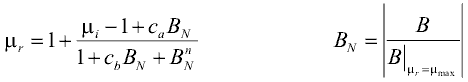

mu_rApproxApproximation of relative permeability mu_r as a function of flux density B for soft magnetic materials |
|
Information
This information is part of the Modelica Standard Library maintained by the Modelica Association.
The relative permeability mu_r as a function of flux density B for all soft magnetic materials currently included in this library is approximated with the following function [Ro00]:

Two of the five parameters of this equation have a physical meaning, namely the initial relative permeability mu_i at B=0 and the magnetic flux density at maximum permeability B_myMax. B_N is the flux density normalized to latter parameter.
Syntax
Inputs (6)
| B |
Type: MagneticFluxDensity (T) Description: Flux density in ferromagnetic flux tube element |
|---|---|
| mu_i |
Type: RelativePermeability Description: Initial relative permeability at B=0 |
| B_myMax |
Type: MagneticFluxDensity (T) Description: Flux density at maximum relative permeability |
| c_a |
Type: Real Description: Coefficient of approximation function |
| c_b |
Type: Real Description: Coefficient of approximation function |
| n |
Type: Real Description: Exponent of approximation function |
Outputs (1)
| mu_r |
Type: RelativePermeability Description: Relative magnetic permeability of ferromagnetic flux tube element |
|---|